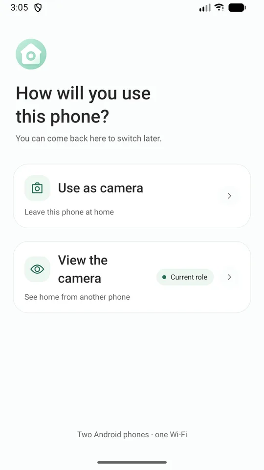
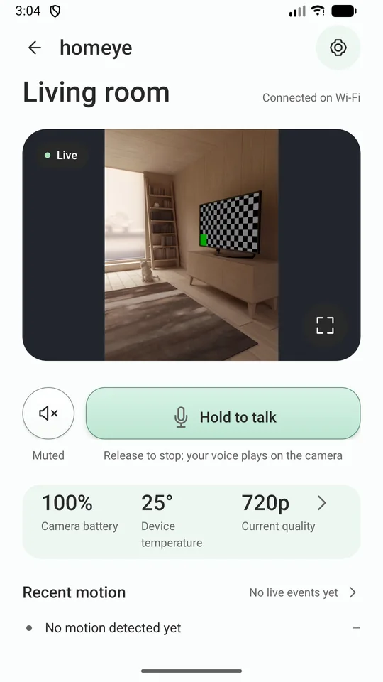
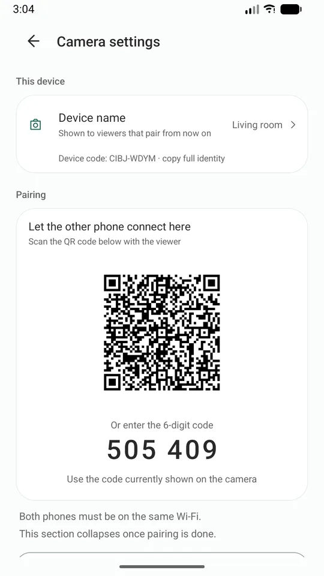
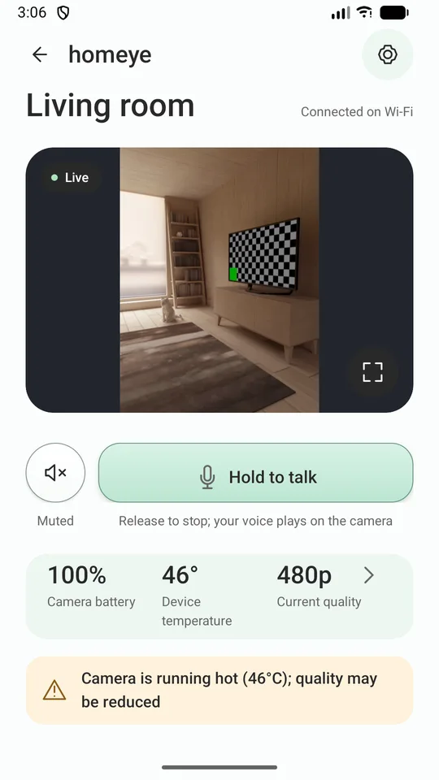
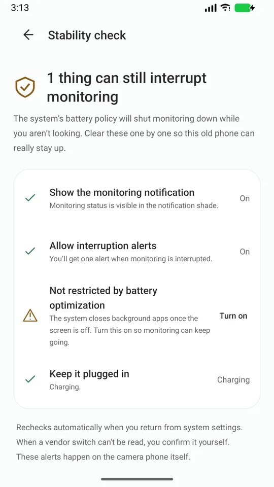
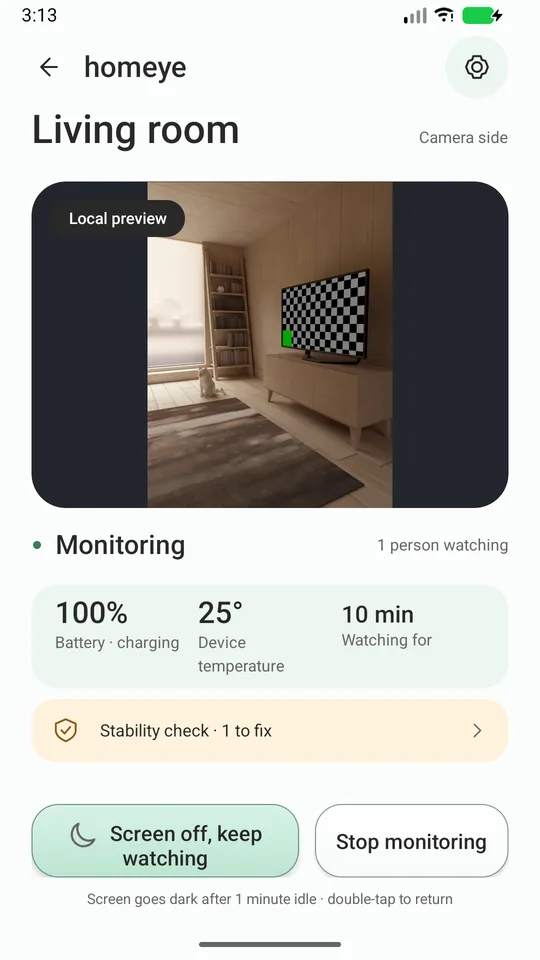

That old Android phone in your drawer is a home camera.
Two phones, one Wi-Fi. Live video, two-way talk and motion alerts — with no account to create, no cloud in the middle, and no ads.
What makes it different
You'll know when it goes down
Both phones count frames themselves. A frozen picture shows as "frozen", with the reason — you don't have to notice it on your own.
It tells you why quality dropped
Hot phone or low battery? It steps the video down and says so, on both screens. It never just gets blurry.
Nothing leaves your Wi-Fi
The two phones talk to each other directly (WebRTC, DTLS-SRTP). We run no media server and keep no recordings.
No account, no analytics SDK
Install and use. We don't collect your email or phone number. The app has no ads and no analytics library.
How it works
- Install Homeye on both phones, on the same Wi-Fi.
- On the old phone, choose Use as camera. Plug it in and point it where you want.
- On your everyday phone, choose Use as viewer and scan the QR code on the old phone.
- Pair once. After that, just open the app.
63 s, recorded on two real phones — starting the camera, then push-to-talk from the viewer.
Screens






What it does
- Live video and audio, four quality levels that follow temperature and battery
- Push to talk through the camera phone's speaker
- Motion detection, with an alert and a thumbnail on the viewer
- The camera phone can blank its screen and keep working
- Low-battery and overheating alerts from the camera phone
- Zoom from the viewer, as far as that phone's lenses allow
- A "Stability check" that walks you through the battery-optimisation switches on your ROM
- Diagnostic log export — it goes only where you send it
What this version cannot do — said up front
It only works on the same Wi-Fi. When you're out on mobile data, this version cannot connect. Remote access needs servers; it is being evaluated and is not in this release.
It cannot promise "never offline". Android limits background work for everyone, and nobody can promise that. What we do promise is that you will know when it stops.
It is not a medical device and does not replace adult supervision.
Privacy, in lines you can check
- Video and audio travel only inside the Wi-Fi you are on, never through our servers.
- No account. No email, no phone number.
- No ads, no analytics SDK.
- Device identity is a key pair generated in the phone's hardware keystore; the private key never leaves it.
- On your Wi-Fi the camera phone announces its name and key fingerprint so the viewer can find it — nothing else.
What you need
Two Android phones (7.0 or newer) on the same Wi-Fi. Keep the camera phone plugged in.